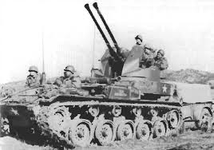

The **M19 Multiple Gun Motor Carriage (MGMC)** was a self-propelled anti-aircraft weapon used by the U.S. Army during World War II. Here are the key details:
The M19 Multiple Gun Motor Carriage (MGMC) served in Europe during World War II with the U.S. Army. By the time the M19 arrived, the Luftwaffe had been driven from the skies by Allied air power, so the M19 found use as an assault gun, a role it performed very well. It was never delivered to other countries for Lend-Lease or the Military Aid Program²³. After World War II and the Korean War, the M19 did not see further combat and was eventually phased out of service.
- **Chassis**: Mounted on the **M24 light tank chassis**.
M19's first combat deployment was during the Korean War in 1950 against North Korean forces.
The M19 Multiple Gun Motor Carriage (MGMC) served in Europe during World War II with the U.S. Army. By the time the M19 arrived, the Luftwaffe had been driven from the skies by Allied air power, so the M19 found use as an assault gun, a role it performed very well. It was never delivered to other countries for Lend-Lease or the Military Aid Program²³. After World War II and the Korean War, the M19 did not see further combat and was eventually phased out of service.
The **M19 Multiple Gun Motor Carriage (MGMC)** played a crucial role as a **self-propelled anti-aircraft weapon** during World War II. Its primary purpose was to provide air defense for ground forces. Equipped with two 40 mm M2A1 Bofors autocannons, the M19 engaged enemy aircraft, protecting troops, convoys, and strategic locations. Its mobility, firepower, and adaptability made it valuable in both offensive and defensive operations.
A historical photographs of the M19 Multiple Gun Motor Carriage
click for more photographsThe M19 Multiple Gun Motor Carriage (MGMC) was a World War II United States Army self-propelled anti-aircraft weapon on the M24 light tank chassis. It was equipped with two Bofors 40 mm guns. It was produced by Cadillac and Massey Ferguson of Canada near the end of 1944.
The M19 was developed from the T65 which was based on the M5 light tank chassis. With the M5 going out of production, the project adopted the M24 Chaffee Light tank chassis and was designated the T65E1. It was accepted into service in May 1944 as the M19 MGMC, equipping several U.S. Army anti-aircraft units during World War II. The M19A1 was an improved variant with an auxiliary engine and spare barrels for the 40 mm Bofors guns.
Although all M19s were produced during World War II, they did not reach operational capability until after the cessation of hostilities. The M19’s first combat was in Korea in 1950 against North Korean forces.
SpecificationsThe M19 MGMC had similar specifications to the M24 Chaffee. It was 17.9 ft (5.46 m) long, 9.33 ft (2.845 m) wide, and 9.83 ft (2.997 m) high. It had a weight of 38,499 lb (17,463 kg), and was powered with a 220 hp (160 kW) Twin Cadillac Model 42, twinned-V-8 engine installation (two Model 42 Cadillac automobile V-8s driving a common gearbox). It could achieve a speed of 35 mph (56.3 km/h), and had a range of 150 mi (241 km). The vehicle was operated with a crew of six.
DevelopmentThe M19 evolved from the 40 mm Gun Motor Carriage T65 project, which was based on an Armored Force requirement for a light anti-aircraft vehicle based on the M5 light tank chassis. Although trials were successful and a production of 1,000 T65s had been requested, the project was stopped by the Ordnance Department since the M5A1 light tank chassis was being phased out of production.
The T65 project was fading away, the Armored Force still needed a light anti-aircraft vehicle, so they made a new project (called T65E1) based on the new T24 chassis (a prototype of the M24 Chaffee). The T65E1 had the same overall layout as the T65 GMC – gun turret at rear with the engines in the middle of the chassis – with a few minor tweaks (including an angular gun shield instead of a straight one).
M19 and M19A1The T65E1 was accepted into service as the M19 Gun Motor Carriage in May 1944 with an order for 904 production models, which was sent to Cadillac. Some 300 were built by Massey Ferguson (then Massey-Harris) in Canada. Production did not start until August of that year, and only 285 were produced by the end of the war. The M19A1 had an auxiliary engine and generator to operate the 40 mm guns when the main engine was shut down, and fixtures for carrying two spare gun barrels.
Service historyThe full order was not completed as the requirements for anti-aircraft weapons had changed and chassis were diverted to produce more of the Chaffee light tank.
The M19 MGMC arrived too late to serve in Europe in World War II with the U.S. Army. It was never delivered to other countries for Lend-Lease or through Military Assistance Program (though a few examples were transferred to the Netherlands in 1951 and the newly established JGSDF in 1954). It served in the Korean War, mostly as an assault gun. It was used in the defense against the North Korean forces on the Eastern side of the Chosin Reservoir by US Army units of the 31st and 32nd Infantry as well as in the Pusan Perimeter fighting and later fighting in Korea. The 40 mm guns were especially effective against Chinese mass infantry charges in North Korea.
Type Self-propelled anti-aircraft weapon